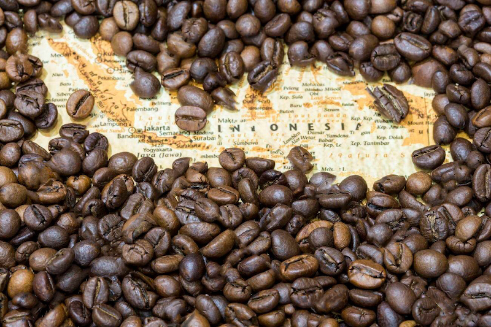
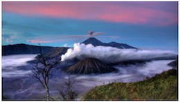
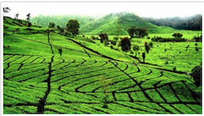
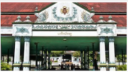

Where is Java located?
Java Island is a piece of paradise that is located at the archipelago of Indonesia, Asia, lying west of Bali and southeast of Malaysia and Sumatra. Surrounded by the Java Sea and the Indian Ocean, Java Island can also be spelled Djawa or Jawa.
Indonesia itself is wild famous for its beaches with turquoise water and white sand. Java is all of it and more. Java is home to roughly half of Indonesia's population and dominates the country politically and economically.
Java's capital, Jakarta, is home to important cities and places of interest in Indonesia, such as Borobudur and Prambanan Temple.
Not only well served with paradisiac beaches, but there are also more than 100 volcanoes on the island. The famous Mount Merapi and Mount Bromo are fantastic places to go explore volcanoes if that is the type of fun you are looking for.


The island of Java is more than a thousand kilometers long; it is the most populous island in the Indonesian archipelago and a famous tourist destination.

When walking along Baluran and Meru Betiri Parks, you can see a lot of rare plants, songbirds, and other typical dwellers of these beautiful places.

In the picturesque mountain town of Bandung, there are a lot of interesting nature and historical attractions. Here, you can visit many museums dedicated to the national history and culture and admire the wonderful Dago waterfall.
| Native name: Jawa (Indonesian) ꦗꦮ (Javanese) ᮏᮝ (Sundanese) |
| Location |
Indonesia |
| Coordinates |
7°29′30″S 110°00′16″ECoordinates: 7°29′30″S 110°00′16″E |
| Archipelago |
Greater Sunda Islands |
| Area |
129,904 km2 (50,156 sq mi) |
To see more info how to get in Java Island, click here.